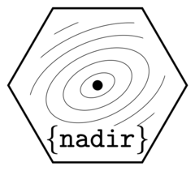

Glmnets and Multipredictors
Source:vignettes/articles/Glmnets-and-Multipredictors.Rmd
Glmnets-and-Multipredictors.Rmdglmnet (https://glmnet.stanford.edu/articles/glmnet.html) and
the Highly Adaptive Lasso (https://tlverse.org/hal9001/) represent examples of an
interesting class of statistical learners which have the default
behavior of automatically specifying a grid of tuning parameters
lambda, fitting models along that grid of
lambda values, and optionally-but-often using a CV-optimal
selected model from that grid.
To deal with learners like this in nadir, we have provided a 3-fold strategy for glmnet.
Strategy 1: Simplify things a bit
-
lnr_glmnet(data, formula, lambda = 0.1)is very simple and a bit dumb, supporting only onelambdavalue
Strategy 2: Implement what the people want!
-
lnr_cvglmnet(data, formula, ...)does what users may expect, which is for each fitting call to result in glmnet automatically setting the lambda grid (if the lambda argument is not set by the user) and using the CV-optimal selected one to predict. That is to say,s = 'lambda.min'is a default setting for the returned predictor from callinglnr_cvglmnet(data, formula).
Strategy 3: The pedantic among us may want something else…
If what you think is that
super_learner()is already doing cross-validation, so why shouldglmnet::glmnet()orhal9001::fit_hal()be doing another layer of cross-validation, then we have a solution for you: you specify thelambdagrid and uselnr_glmnet_grid()which returns anadir_multi_predictorobject.nadir_multi_predictorobjects are learners that return a list of prediction functions indexed by the lambda grid (vector) which are automatically expanded insidenadir::super_learner()(andnadir::crossfit_super_learner(), etc.). This way, if your grid is saylambda = 10^c(0, -1, -2, -3),super_learner()can expressly choose among differentglmnets bylambdavalue.So you can use
lnr_glmnet_grid(data, formula, lambda = c(...)), ...)too.
For the Highly Adaptive Lasso, things are similar, but slightly
simpler due to how hal9001::fit_hal() behaves.
-
lnr_hal(data, formula, ...)supports passing either onelambdavalue or being left as its defaultNULLand automatically selecting a CV-optimallambda. -
lnr_hal_grid(data, formula, ...)acts similarly tolnr_glmnet_grid(data, formula, lambda = c(...)))
Here are some {glmnet} examples to make things
concrete
Say you want to super learn with some glmnet learners on
a grid of lambdas.
Then you may want lnr_cvglmnet() – it’s quite easy to
use.
library(nadir)
set.seed(1234)
df = data.frame(Y = rbinom(100, 1, 0.5),
A = rbinom(100, 1, 0.5),
L1 = runif(100), L2 = runif(100))
sl_fit_a <- super_learner(
data = df,
formulas = Y ~ A + L1 + L2,
outcome_type = "binary",
n_folds = 10,
learners = list(
lnr_cvglmnet, # the object of our present discussion
lnr_glm,
lnr_mean
),
extra_learner_args = list(
list(alpha = 0, lambda = NULL, nlambda = 100) # you don't have to specify lambda --
# a grid will be made for you by the `{glmnet}` package.
# we give nlambda as a hyperparameter as an example.
)
)
#> Warning: package 'future' was built under R version 4.5.2
round(sl_fit_a$learner_weights, digits = 4)
#> glmnet glm mean
#> 0 0 1A downside of this approach is that you can’t really see anything
about what lambda the glmnet::cv.glmnet() call picked
out.
Aside (before we leave lnr_cvglmnet()): Just to show
you, there are some arguments you can pass to the predictor beyond
newdata here, just in case you need them. You can change
the s = 'lambda.min' approach, but I don’t know when that
would be recommended. Inside glmnet, I believe the
default is to use s = 'lambda.1se', which is to predict
under the largest lambda value that is estimated to be within 1 standard
deviation of the CV selected lambda. Say you wanted to do that for some
reason. Then you would write something like this:
library(tibble)
df <- tibble(
L1 = rnorm(n = 100), L2 = rnorm(n = 100), A = rnorm(n = 100, mean = L2), Y =
rbinom(n = 100, size = 1, plogis(0.1 * L2 + 1.5*A)))
cvglmnet_pred <- lnr_cvglmnet(df, Y ~ A + L1 + L2, family = binomial(link = 'logit'))
head(cvglmnet_pred(df, s = 'lambda.1se', type = 'response'))
#> [1] 0.4226341 0.8042477 0.6732261 0.4687127 0.6332270 0.4708445
# you can check that this is not the same as our default, which is to use lambda.min,
# the CV selected lambda
head(cvglmnet_pred(df, type = 'response'))
#> [1] 0.3605527 0.8957943 0.7429295 0.4308994 0.6861430 0.4342170
head(cvglmnet_pred(df, s = 'lambda.min', type = 'response'))
#> [1] 0.3605527 0.8957943 0.7429295 0.4308994 0.6861430 0.4342170Suppose you want to see what lambda values are selected then, along the lines of our Strategy 3.
Then consider using the lnr_glmnet_grid() approach with
a lambda grid. This time, we’ll make the data generating process a
little more glmnet friendly to show off good model
selection actually happening.
n <- 300
df <- tibble(
L1 = rnorm(n = n),
L2 = rnorm(n = n),
L3 = rnorm(n = n),
L4 = rnorm(n = n),
L5 = rnorm(n = n),
A = rbinom(n = n, size = 1, prob = plogis(L4)),
Y = rbinom(n = n, size = 1, prob = plogis(0.25 * L4 + 0.5 * L5 + 1.25 * A)))
sl_fit_b <- super_learner(
data = df,
formulas = Y ~ A + L1 + L2 + L3 + L4 + L5,
outcome_type = "binary",
n_folds = 10,
learners = list(
lnr_glmnet_grid, # the object of our present discussion
lnr_glm,
lnr_mean
),
extra_learner_args = list(
glmnet_grid = list(lambda = 10^{seq(0, 1, l = 10) * -4})
# you do have to specify lambda now
)
)
learner_weights <- sl_fit_b$learner_weights
t(t(round(sl_fit_b$learner_weights, digits = 4))) # rotate into a matrix with rownames for viewability
#> [,1]
#> glmnet_grid_lambda_1 0.0000
#> glmnet_grid_lambda_0.359381 0.0000
#> glmnet_grid_lambda_0.129155 0.0000
#> glmnet_grid_lambda_0.0464159 0.4128
#> glmnet_grid_lambda_0.016681 0.0000
#> glmnet_grid_lambda_0.00599484 0.0000
#> glmnet_grid_lambda_0.00215443 0.0000
#> glmnet_grid_lambda_0.000774264 0.0000
#> glmnet_grid_lambda_0.000278256 0.0364
#> glmnet_grid_lambda_1e-04 0.5508
#> glm 0.0000
#> mean 0.0000In that last output, you can see evidence of how the
nadir_multi_predictor works.
If you really wanted to dig into one, you could take a look at what
lnr_glmnet_grid() returns:
# the output of calling this learner on data with a formula is a "multipredictor"
# i.e., a list of predictors
multipreds <- lnr_glmnet_grid(
data = df,
formula = Y ~ A + L1 + L2 + L3 + L4 + L5,
lambda = 10^{seq(0, 1, l = 10) * -4},
family = binomial(link = 'logit'))
# check out the multipredictors -- they're a list of predictors
names(multipreds)
#> [1] "lambda_1" "lambda_0.359381" "lambda_0.129155"
#> [4] "lambda_0.0464159" "lambda_0.016681" "lambda_0.00599484"
#> [7] "lambda_0.00215443" "lambda_0.000774264" "lambda_0.000278256"
#> [10] "lambda_1e-04"
# make predictions from the learner associated with the 5th lambda from the grid
head(multipreds[[5]](df))
#> [1] 0.7813384 0.7841946 0.4211412 0.8099401 0.6997690 0.6870989
# these are what `super_learner()` sees and cross-validates overLet’s do some Highly Adaptive Lasso examples
# using the same df from above; lnr_hal_grid also returns multipredictors
multipreds <- lnr_hal_grid(
data = df,
formula = Y ~ A + L1 + L2 + L3 + L4 + L5,
lambda = 10^{seq(0, 1, l = 10) * -4},
family = binomial(link = 'logit'))
#> Warning: glmnet.fit: algorithm did not converge
#> Warning: glmnet.fit: algorithm did not converge
#> Warning: glmnet.fit: algorithm did not converge
#> Warning: glmnet.fit: algorithm did not converge
#> Warning: glmnet.fit: algorithm did not converge
# so we can super learn with it; though slower.
timing_c_start <- Sys.time()
sl_fit_c <- super_learner(
data = df,
formulas = Y ~ A + L1 + L2 + L3 + L4 + L5,
outcome_type = "binary",
n_folds = 3, # reduce folds so it isn't so slow
learners = list(
lnr_hal_grid, # the object of our present discussion
lnr_glm,
lnr_mean
),
extra_learner_args = list(
hal_grid = list(lambda = 10^{seq(0, 1, l = 3) * -4})
# user a smaller grid here so it's not so slow
)
)
timing_c_end <- Sys.time()
print(paste0("timing: "))
#> [1] "timing: "
print(timing_c_end - timing_c_start)
#> Time difference of 19.25994 secs
learner_weights <- sl_fit_c$learner_weights
t(t(round(learner_weights, digits = 3))) # rotate into a matrix with rownames for viewability
#> [,1]
#> hal_grid_lambda_1 0.021
#> hal_grid_lambda_0.01 0.000
#> hal_grid_lambda_1e-04 0.051
#> glm 0.844
#> mean 0.084Or we could have used lnr_hal() and let it tune
itself.
timing_d_start <- Sys.time()
sl_fit_d <- super_learner(
data = df,
formulas = Y ~ A + L1 + L2 + L3 + L4 + L5,
outcome_type = "binary",
n_folds = 3, # reduce folds so it isn't so slow
learners = list(
lnr_hal, # the object of our present discussion
lnr_glm,
lnr_mean
),
extra_learner_args = list(
hal = list(lambda = NULL) # this is the default just made explicit for explanation here
)
)
timing_d_end <- Sys.time()
print(paste0("timing: "))
#> [1] "timing: "
print(timing_c_end - timing_c_start)
#> Time difference of 19.25994 secs
learner_weights <- sl_fit_d$learner_weights
t(t(round(learner_weights, digits = 3))) # rotate into a matrix with rownames for viewability
#> [,1]
#> hal 0.232
#> glm 0.716
#> mean 0.052